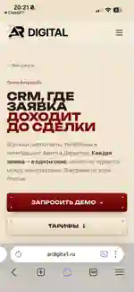

Яндекс.ДиректРоссия
AR Digital
Открыть сайт ↗Оффер
CRM, Директ, Авито и заявки до сделки.
Цены
Аудит от 20 000 ₽, направления от 30–50 тыс. ₽.
Сильное
Связь рекламы, CRM и продаж.
Слабое
Меньше акцента на позиционирование и упаковку.
Что взять
Логику «не просто трафик, а путь заявки до сделки».